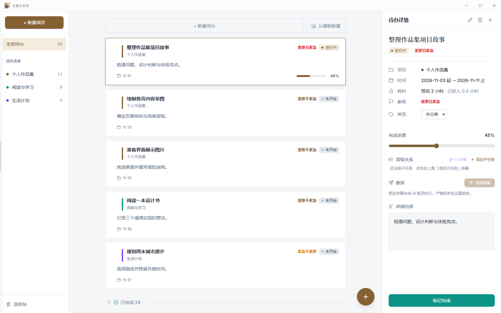
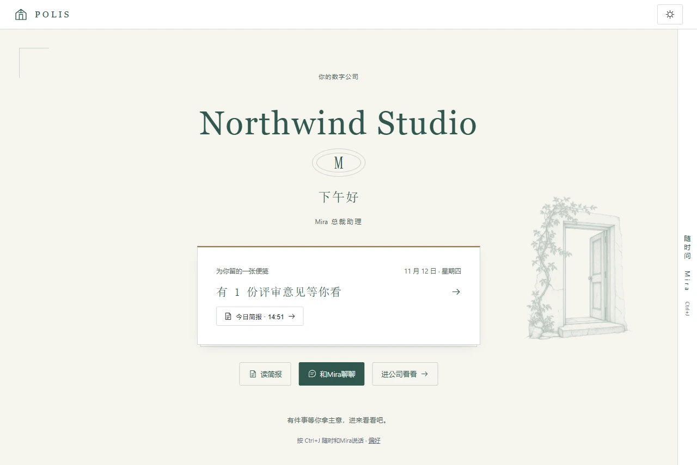
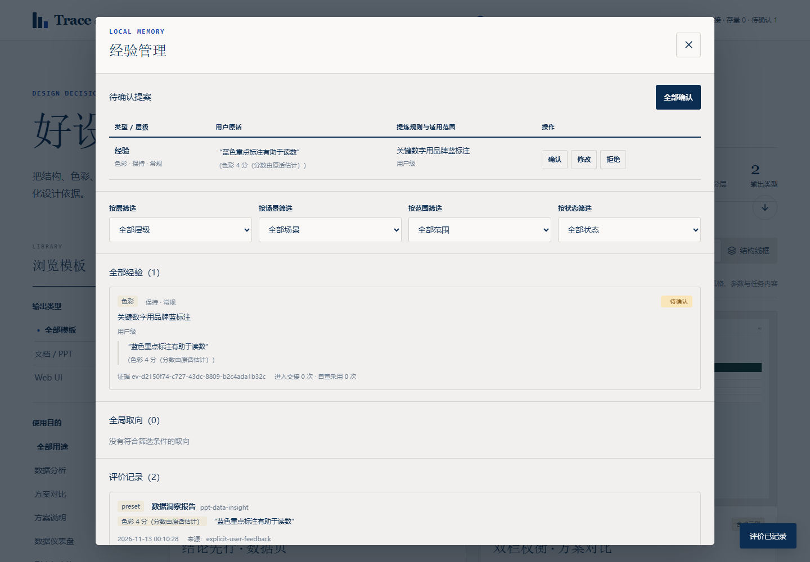

SELECTED CONCEPTS · 2026
Ideas, taking shape.
在人与 AI 之间，探索工具的另一种可能。
四个仍在生长中的想法，关于创造与体验。
CONCEPT STUDY
概念探索 · 非最终界面

在同一画面整理项目、浏览任务，并查看一件事的细节。
放大查看Argos
每一件待办，都是一段航程。
借阿尔戈号的远航意象，把个人待办视为冒险，AI 团队视为同行伙伴。
落在日常
整理任务、聚焦行动、回看节奏，让目标一步步推进。
正在探索
向 AI 委派任务，由用户验收产物。高级执行流程仍在验证中。
实际界面 · 虚构演示数据
开发中，部分功能仍待验收。

一张便笺，先看今天需要决定的事。
Polis
一座城邦，
也是你的数字公司。
借雅典城邦的意象，让 AI 伙伴有岗位、事务有归属。把对话里的想法，变成可审阅、可跟进的项目。
从找到伙伴，到形成计划
从组织图找到负责的角色，经访谈、提案与评审，将想法落为由你批准的计划。
让决定回到你手中
简报呈现待决定事项，流程图展开项目与阶段。调整计划前先确认，当前步骤仍由用户推进。
本地优先 · Windows · 早期试用
真实界面 · 示例数据


Virta
让数据，成为清晰的表达。
离线优先、Agent 友好的可视化 CLI，让图表自然融入工作流程。
输入数据，带走图表
读取 CSV / JSON / XLSX / Markdown，推荐视图并提供中文洞察。输出离线 HTML 与 SVG / PNG。
Trace On
让偏好留下痕迹，
让下一次设计有所依据。
面向 AI Agent 的本地设计记忆工具，把日常反馈积累为可复用的设计经验。
由你确认，再被记住
对照评价原话与提炼结果，确认、修改或拒绝，让经验保留你的本意。
从参考到下一次创作
浏览模板与风格预设，将确认后的经验带入后续任务，为 Agent 提供设计指导。
本地 v1.0.0 · 尚未对外发布
真实运行界面 · 合成演示数据


用户原话与提炼结果并排呈现，经验由用户确认。